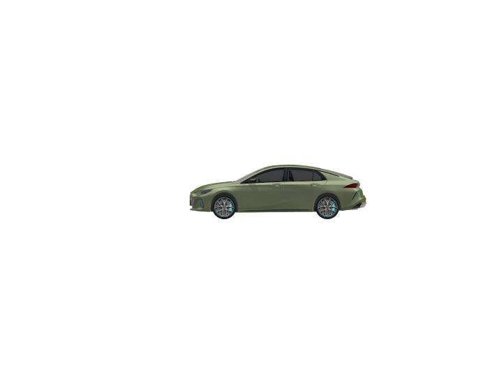
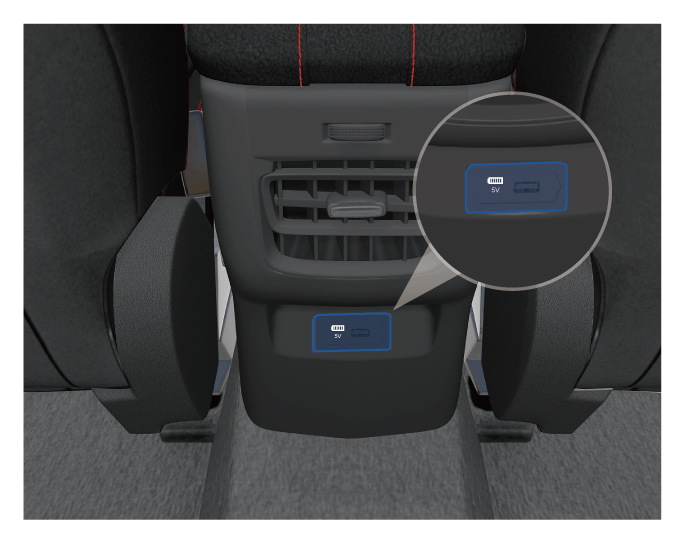

如果车辆需要牵引，应由广汽传祺特约店或专业拖车公司进行牵引。
建议用平台式载货汽车拖载。若条件不足，也可视情况用车轮提起式载货汽车拖载。
平台式载货汽车拖车

车轮提起式载货汽车从前方拖车

– 在后轮下方放置拖拽台车。
车轮提起式载货汽车从后方拖车

– 在前轮下方放置拖拽台车。
紧急牵引
如果在紧急情况下无法找到载货式拖车，则可将拖车缆或拖车链紧固在紧急拖车牵引环内，临时牵引车辆，但这种方法只适合在坚固平坦的路面上低速、短距离牵引。
安装牵引钩

–用裹有布的一字螺丝刀在-箭头-位置撬开牵引钩盖。

–从行李箱内的随车工具盒中取出牵引钩①。
–将牵引钩①顺时针旋进螺纹孔，并拧紧。
牵引注意事项
在紧急牵引前，务必按照下列事项操作：
– 牵引与被牵引的车辆必须开启危险警告灯，并且须遵守当地交通法规。
– 牵引钩必须牢固地拧紧在螺纹孔里。否则，牵引时牵引钩可能从螺纹孔内滑脱。
– 被牵引的车辆必须将挡位切换至“N”挡。
– 被牵引的车辆需要将整车电源切换至“ON”挡，来回转动方向盘，确认方向盘能转动。
在紧急牵引过程中，务必按照下列事项操作：
– 慢速起步行驶，直至牵引绳绷紧，然后慢慢加速。
– 必须平稳行驶，切勿急加速、急减速、急转弯。
– 牵引车辆时，被牵引车辆制动时应比正常情况提前制动，但应轻踩制动踏板。
– 牵引作业时，必须使牵引绳始终处于绷紧状态。
— 页面到底了 —